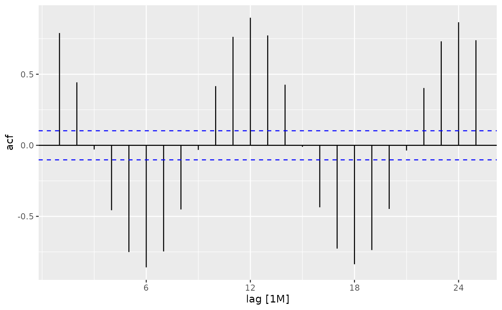

arc_weather - Arctic LTER Toolik Field Station (ARC)
Arctic LTER daily weather data from Toolik Field Station
Source:vignettes/arc_weather_vignette.Rmd
arc_weather_vignette.RmdIntroduction
The arc_weather data sample contains selected meteorological records from the Toolik Field Station at Toolik Lake, Alaska, from 1988 - 2018. This data set offers opportunities to explore and wrangle time series data, visualize patterns (e.g. seasonality), and apply different forecasting methods.

Data exploration
Attach required packages:
Here, we highlight daily air temperature (the data sample also contains records for precipitation and wind speed) using functions from the tsibble and feasts R packages (both part of the fantastic tidyverts ecosystem of “tidy tools for time series”).
# Calculate monthly average of daily mean air temperature and convert to tsibble:
arc_weather_ts <- arc_weather %>%
mutate(yr_mo = yearmonth(date)) %>% # Make a column with just month and year from each date
group_by(yr_mo) %>% # Group by year-month
summarize(avg_mean_airtemp = mean(mean_airtemp, na.rm = TRUE)) %>% # Find monthly mean air temperature
as_tsibble(index = yr_mo) # Convert to a tsibble (time series tibble)
# Check out the first 10 lines:
head(arc_weather_ts, 10)
#> # A tsibble: 10 x 2 [1M]
#> yr_mo avg_mean_airtemp
#> <mth> <dbl>
#> 1 1988 Jun 9.61
#> 2 1988 Jul 12.0
#> 3 1988 Aug 6.96
#> 4 1988 Sep -0.26
#> 5 1988 Oct -16.4
#> 6 1988 Nov -29.2
#> 7 1988 Dec -17.1
#> 8 1989 Jan -29.9
#> 9 1989 Feb -8.06
#> 10 1989 Mar -19.4Once the data are converted into a tsibble in the last line above, we can use helpful functions in feasts (like autoplot() and gg_season()) to explore the time series data a bit more.
# Create a line graph of monthly average of mean daily air temperatures:
arc_weather_ts %>%
autoplot(avg_mean_airtemp)
We might want to decompose the time series data to further explore components. See Chapter 3 Time series decomposition in Forecasting: Principles and Practice by Rob J Hyndman and George Athanasopoulos for more information on decomposing time series data.
We can also explore autocorrelation:

Then you can move on to time series forecasting and further analysis! Have fun with the arc_weather data sample from Arctic LTER.
Citation
Shaver, G. 2019. A multi-year DAILY weather file for the Toolik Field Station at Toolik Lake, AK starting 1988 to present. ver 4. Environmental Data Initiative. https://doi.org/10.6073/pasta/ce0f300cdf87ec002909012abefd9c5c (Accessed 2020-07-04).
How we processed the raw data
Data cleaning
# Read that data
# View(stream_chem$attribute_metadata)
arc_weather <- read_d1_files(arc_weather_path, na = c("", "#N/A"))
arc_weather <- arc_weather$data
# Simplify to convert date to class 'date', reduce variables to date, station, mean_airtemp, daily_precip, mean_windspeed:
arc_weather <- arc_weather %>%
janitor::clean_names() %>%
dplyr::select(date, station, daily_air_temp_mean_c, daily_precip_total_mm, daily_windsp_mean_msec) %>%
rename(mean_airtemp = daily_air_temp_mean_c,
daily_precip = daily_precip_total_mm,
mean_windspeed = daily_windsp_mean_msec) %>%
mutate(date = ymd(date)) %>%
mutate(station = tolower(station)) %>%
mutate(station = case_when(
station == "tlkmain" ~ "Toolik Field Station"
))